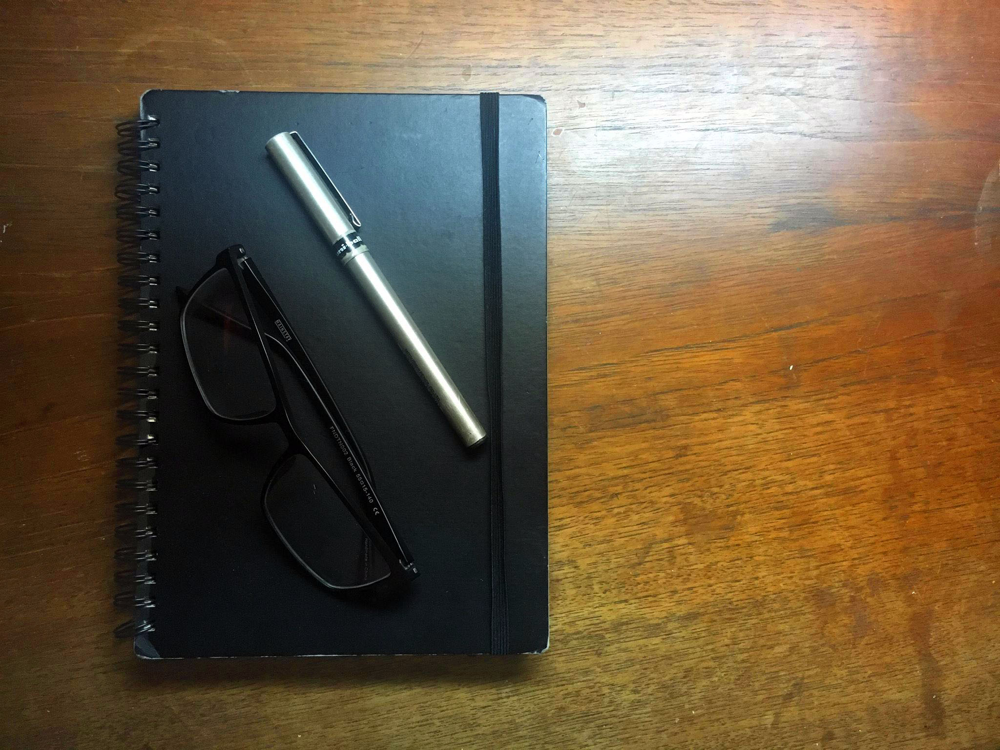

I'm Starting a Blog, I Guess
2018-08-15

Well - this is it, I made a thing.
I’ve been thinking about it for awhile now, actually. But the way I wanted it was always what held it up - no Wordpress, I wanted to build the site myself. Make a project out of it. I can code!
So after a few winter breaks of half-assing it, I finally found the time to make fire up the engines for real. I decided to make it using the same tools as another project I did - shout out to queensbluebird.ca - and I got cracking. Maybe I’ll do another post for the nerds with those details.
But the real shout out goes to my wisdom teeth. Without the incredibly boring week that followed their departure, I would’ve found anything more fun than the coding to do. Thanks boys, I won’t miss you.
So yeah, thing’s made. Welcome to my internet corner, read around as it (hopefully) grows. Hopefully, one day I’ll write better content than a YouTube comment section. A man can dream.
Cheers,
Litt